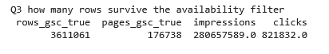
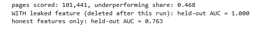

Wrong data doesn't look wrong. That's the problem I work on.
I catch bad data before it becomes a confident wrong answer. Operations background, MSc in Artificial Intelligence, based in Ireland.
An error that left no trace in the file
A year of sales records, around 400,000 rows, was due to go to a modelling team. An advertising spend decision was waiting on the output.
Someone asked me to check the batch against the raw invoices. That check wasn't standard. It happened because a person thought to ask.
The totals ran high. Refunds hadn't been entered, so money that went back out to customers was never subtracted. The file itself looked correct, and that's the part worth sitting with. A missing record leaves nothing behind. No blank cell, no broken format, no outlier to catch your eye. Validation rules check what's there. Nothing in a file can tell you about a row that was never written. The only way to see it was against the source.
I escalated. The batch was held and never reached the modelling team. My manager corrected the data. Afterwards a screen was built that flags missing payouts against expected variance, and I tested it.
The forecast would have run cleanly on those numbers. It would have produced a confident figure, the spend decision would have been made on it, and nobody would have known.
I found this error. I didn't design the reconciliation and I didn't build the screen. The check ran because someone requested it, not because a control required it. That's the actual finding: a pipeline moving hundreds of thousands of records had no standing reconciliation against source, and the gap stayed invisible until somebody happened to ask.
Checking the data before trusting the model
On my FlyRank internship I worked with an anonymised search-performance warehouse: one month of daily records came to 9.8 million rows. The job was to score which pages were losing clicks they should be getting. Before building anything, I wrote down what one row meant and checked it with queries.
The first check changed the whole project. The flag saying whether search data was available was true on only 36.7% of rows. My label came from that search data, so nearly two thirds of the month could never carry an answer. Counting rows would have suggested far more to work with than existed.

I then broke the model on purpose. I added one feature that was secretly the answer in disguise. The model scored a perfect 1.000. Removing it gave 0.763. A perfect score on held-out data is the symptom, not the achievement.

Weeks later I audited my own finished model and found I had made a quieter version of the same mistake. The way I had defined the label meant 17,188 pages, a fifth of the data, could only ever be scored zero. The model had learned my definition rather than anything real. Taking those pages out, its measured skill fell from 0.722 to 0.593.
In the end a simple rule outranked every model I trained. Its headline precision was 0.98, but that was carried by the largest client; across the other nine it ranged from 0.64 to 0.96.
This was an internship dataset, anonymised, not a live business. The results are observed on one month of inputs and one month of outcomes, and I report them as that.
How I check data now
- Where a source exists, reconcile against it. Validation only checks what is present; it cannot see a row that was never written.
- Count how much of the data can actually carry the answer before counting how much data there is.
- Treat a near-perfect result as a symptom to investigate, and check whether the label was built from the inputs.
- Write down what I will not claim, and keep it next to what I will.
About
I spent my working life in operations before I studied AI. That's the wrong order on paper and the right one in practice. Operations is where data gets created, and where the errors start. Most people who can build a model have only ever seen data downstream, already cleaned, already in a warehouse.
I completed an MSc in Artificial Intelligence at National College of Ireland in 2026. So I know what a model does with quietly wrong inputs: it produces a confident answer and gives you no reason to doubt it.
My thesis worked with GMP-compliant pharmaceutical manufacturing data: batch, process and sensor records. That is academic exposure, not professional. I have not worked in a GxP environment, and I would expect to learn its audit and validation practice on the job. What carries over is the habit: check the data against its source before trusting anything built on it.
That's the gap I work in.
Get in touch
If any of this sounds like a problem you have, book fifteen minutes. No preparation needed.
- Based in Ireland, available now
- Looking for data governance and data quality work, ideally in pharma
- Happy to work inside your environment and under your access rules
Not ready for a call?
Send a note instead, or pass this on to whoever it should reach. It comes straight to my inbox.